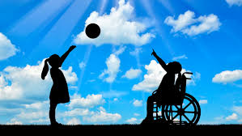

El deporte es una parte esencial en la formación del ser humano
siendo una parte fundamental para el desarrollo y crecimiento
de las habilidades y aptitudes de cada persona, hablando del
deporte como estilo de vida, por salud o entretenimiento.
puede favorecer el aprendizaje de los roles del individuo y de
las reglas sociales, reforzar la autoestima, el auto concepto,
el sentimiento de identidad y la solidaridad. Además
de aportar múltiples beneficios físicos y psicológicos,
el deporte es una potente herramienta de transformación
y una actividad formadora. El deporte desempeña un papel
social importante como promotor de la integración social
económico en diferentes contextos geográficos, culturales
y políticos. y el desarrollo Es una herramienta poderosa
para fortalecer los lazos y relaciones sociales, y para
promover los ideales de paz, fraternidad, solidaridad,
tolerancia y justicia.

El deporte no solo es un asunto de salud, también es una
herramienta efectiva en la educación de los niños, pues
a través de él se fomentan valores y habilidades de manera
sana y divertida.
Practicar alguna disciplina física no solo para “activar todas
las funciones cerebrales que son indispensables para su desarrollo
cognitivo general”, sino que “les enseña una serie de habilidades
y conocimientos que les serán de gran ayuda durante toda su vida”.